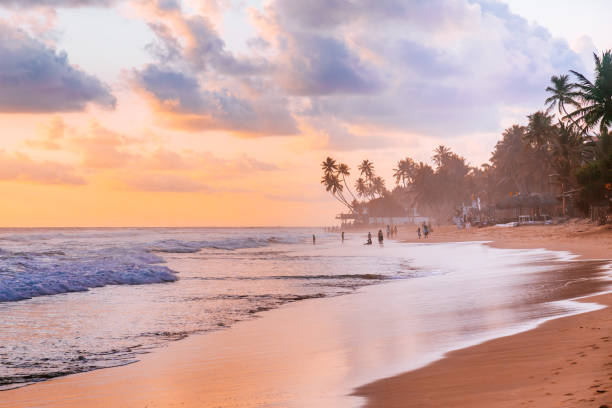
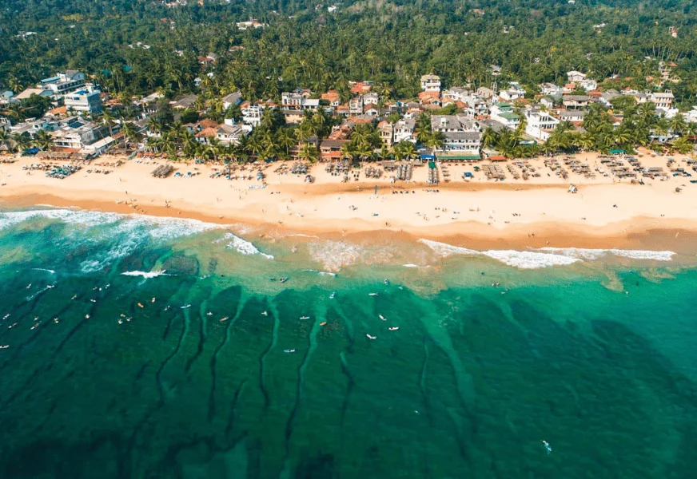

Hikkaduwa Marine National Park protects vibrant coral reefs and tropical marine life. It is one of Sri Lanka's best places for snorkeling, glass-bottom boat rides, and coastal relaxation.
Highlights & Experiences
Coral Reefs: Colorful formations in shallow waters.
Sea Life: Tropical fish and occasional sea turtle sightings.
Beach Vibe: Easy access restaurants, surf, and sunset views.


Quick Facts for Travelers
Best Time: November to April.
Tip: Morning waters are usually clearer for snorkeling.
Main Highlight: Protected coral and marine biodiversity.